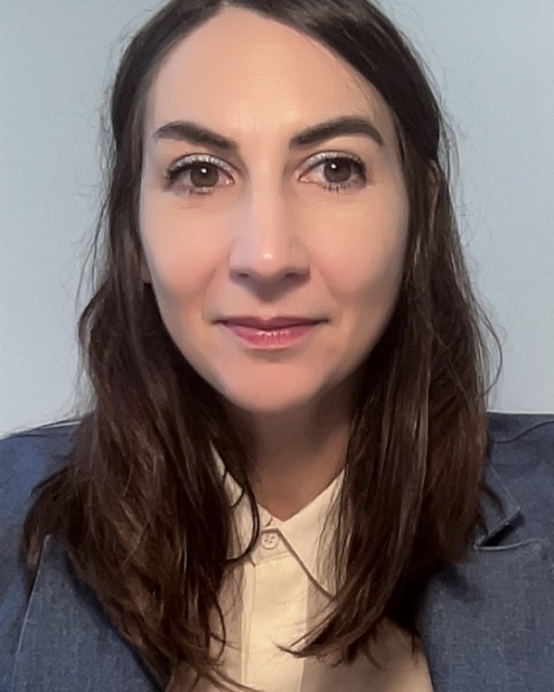

Linguistics · Chinese · Italian dialects
Linda Badan
Assistant Professor of Linguistics (tenure track)
Department of Linguistic and Literary Studies (DiSLL), University of Padova
Linda Badan works on theoretical and applied linguistics in Chinese and Italian. Her research covers syntax, the interfaces between syntax and prosody and between syntax and pragmatics (with particular attention to information structure in Chinese), comparative Romance–Sinitic linguistics, and the acquisition of Chinese and Italian as second and heritage languages.
Before joining Padova in 2024 she taught and did research at the University of Trento, at Ghent University (Assistant and then Associate Professor of Linguistics, 2016–2023), and in Leiden, Amsterdam, Paris and Hong Kong. She holds a PhD in Linguistics from the University of Padova and serves on the Board of Directors of the European Association of Chinese Linguistics (EACL) as Secretary.
Research interests
- Syntax of Mandarin Chinese and the cartography of the clause
- Information structure: topic, focus, discourse markers, exclamatives
- The syntax–prosody and syntax–pragmatics interfaces
- Italian and the dialects of Northern Italy; Romance–Sinitic comparison
- L1, L2 and heritage acquisition of Chinese and Italian
Latest publications All 58 →
Badan, L. Politeness linguistic strategies in Mandarin and the syntax of discourse. Lingua 341: 104222.
Gozzi, G., Torresin, S. & Badan, L. Soundscapes Across Mountains and Cities: A Linguistic Study in the Trentino Region. Acoustics 8: 8.
Badan, L. & Padovan, A. A reduplicated form in Venetan: An analysis at the semantics-pragmatics and syntax interface. Italian Journal of Linguistics 37(2): 131–154.
Lorusso, P. & Badan, L. On the interpretation of inflected subject clitics. Linguistic Variation.Online first
Amenta, S., Foppolo, F. & Badan, L. The Role of Morphological Information in Processing Pseudo-words in Italian L2 Learners: It’s a Matter of Experience. Journal of Cognition 8(1): 14, 1–17.
Recent and upcoming All talks →
- 30 Sept – 2 Oct 2026
Talk with Paolo Lorusso at SinFonIJA 19, University of Graz: Subject clitics, focus and definiteness in the Veneto variety of Este.
- 23–25 Sept 2026
Two talks at CIDSM 20 in Nice: on auxiliary alternation between Venetan and Trentino (with Enrico Castro) and on subject clitics in the variety of Este (with Paolo Lorusso).
- 2–4 Sept 2026
EACL-13 in Paris: talks on 就是 jiùshì and on the acquisition of aspect markers in L1 Mandarin, and discussant in the conference programme.
- Aug – Sept 2026
Posters with Chiara Bogoni on tone prediction in reading Chinese at AMLaP 2026 (Saarbrücken) and ESCoP–CoPM 2026 (Hangzhou).
- 16–19 June 2026
Co-organised DiGS 27, the Diachronic Generative Syntax conference, at the University of Padova.
- April 2026
Invited talks on equative copular clauses in Mandarin at CHILL, Leiden University, and LingLunch, Université Paris Cité.
Contact
- linda.badan@unipd.it
- Office
- Polo Beato Pellegrino, Office 92
Via Vendramini 13, 35137 Padova, Italy - ORCID
- 0000-0002-9195-2167